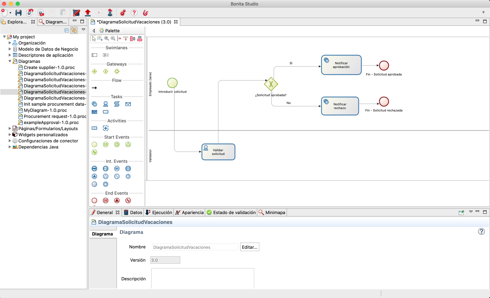
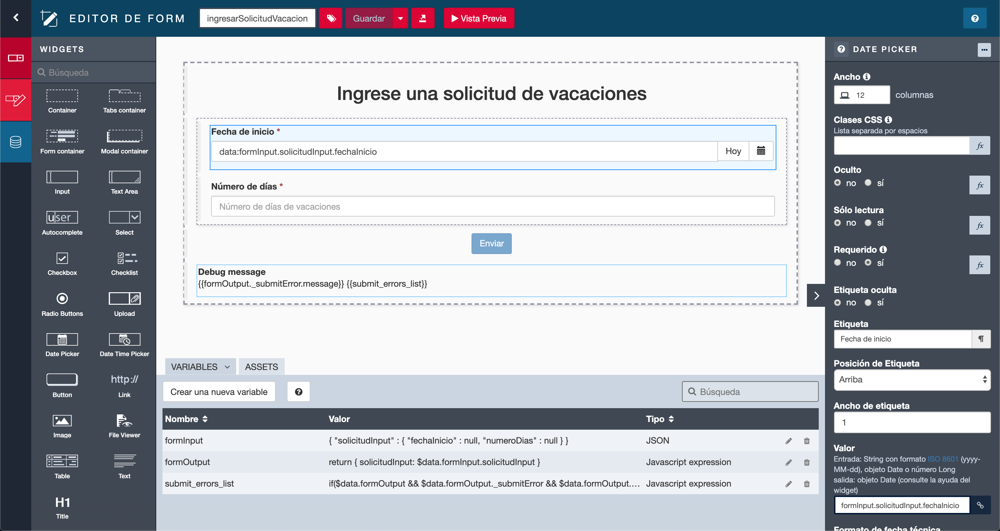
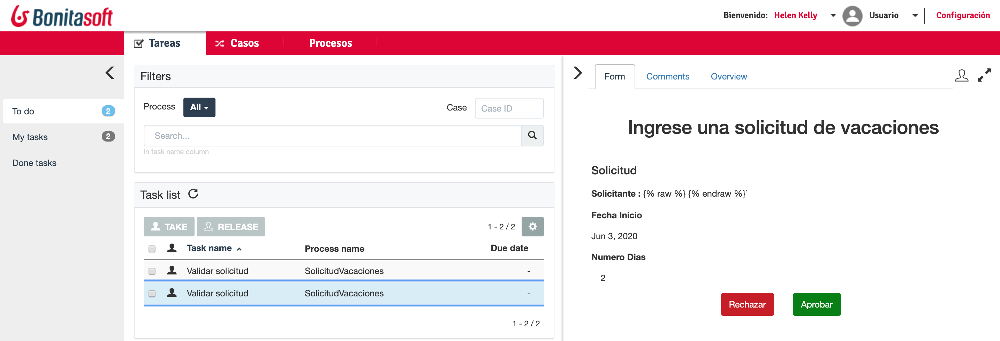
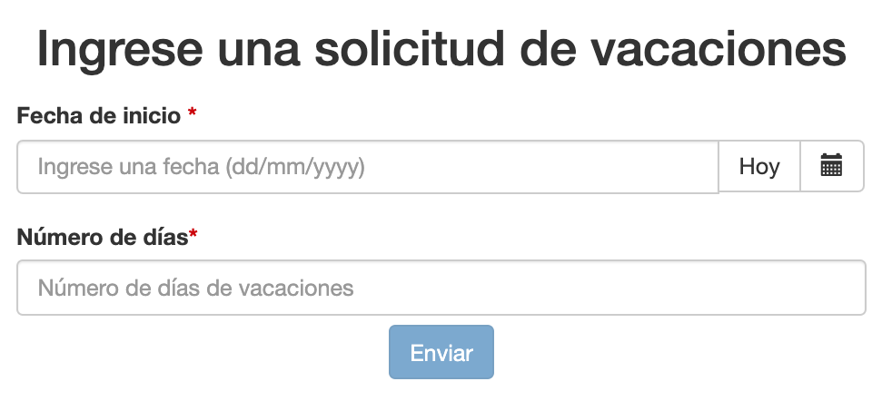
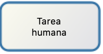
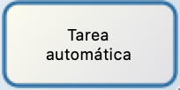
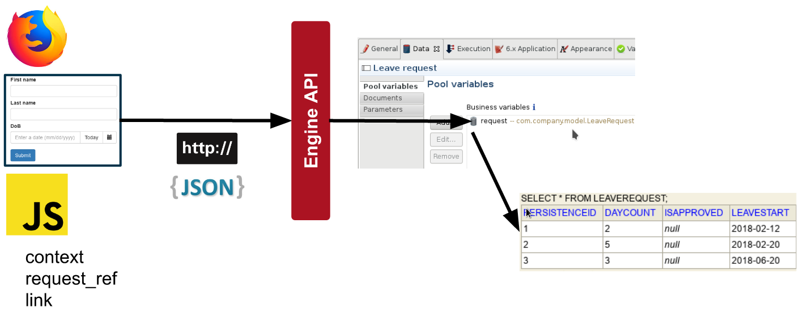

Checklist
- Descargue los archivos de Bonita Camp de GitHub: https://github.com/Bonitasoft-Community/bonita-camp/releases
- Instale la última versión de Studio (consulte el documento de ejercicios)
- Inicie Bonita Studio y haga clic en el botón Portal.
- Recomendamos usar Chrome o Firefox durante el desarrollo
Programa
- La solución Bonita
- Componentes de Bonita
- Introducción a BPMN
- Gestión de datos y contratos
- Formularios y páginas
- Actores
- Conectores
- Aplicaciones
- Despliegue
La solución Bonita
- Limite el volumen de código necesario para crear una aplicación
- Usar modelos (por ejemplo, diagramas BPMN) para definir aplicaciones
- Los modelos mejoran la colaboración al definir aplicaciones
- Un enfoque orientado a procesos facilita la cooperación durante la ejecución de procesos
- Te permite monitorear y optimizar la ejecución de procesos
Componentes de Bonita
Quatro componentes principales:
- Bonita Studio
- Bonita UI Designer
- Bonita Engine
- Bonita Portal
Bonita Engine + Portal: empaquetado en una aplicación web JEE (war)
Bonita Studio incorpora un entorno de prueba con Tomcat + la aplicación web
Studio : editor de diagramas
Studio : UI Designer
Bonita Engine
Proporciona un conjunto de servicios
Responsable de la ejecución de los procesos (sin interfaz gráfica)
Exponer API REST
Basado en Java SE
Encapsulado con el Portal en una aplicación web Java
Requiere:
- servidor de aplicaciones Java EE
- base de datos transaccional compatible con JDBC
Bonita Portal
Interfaz web para el usuario final y el administrador
Presenta la lista de tareas a realizar
Te permite implementar y configurar procesos
Bonita Portal : Formularios
Muestra los formularios creados con el UI Designer
Los formularios están asociados con el proceso (instanciación) o las tareas humanas
y servido en Portal Bonita o mediante una aplicación
Bonita Portal : Aplicaciones
Permite la implementación de aplicaciones empresariales compuestas de páginas creadas con el UI Designer

Introducción a BPMN
Notación estándar para modelado de procesos
Lo esencial:
 | Pool : un pool por proceso |
 | Événement de début : le démarrage d'un processus |
|  | Tarea humana: cuando un usuario está involucrado |
|  | Tarea / servicio automático: ejecutado por el motor |
 | Evento final: desencadena el archivo del proceso |
| → | Transiciones: se utilizan para vincular elementos |
Puertas lógicas
3 tipos de puertas lógicas:
 | Exclusivo |  |
 | Paralelo | |
 | Inclusivo |
- Las condiciones se definen en las transiciones salientes. No hay condiciones para puertas paralelas
- Una buena práctica es usar las puertas simétricamente para mejorar la legibilidad
Ejercicio 1
Modelado de proceso básico
Si aún no lo has hecho, descargua las instrucciones y correcciones desde GitHub: https://github.com/Bonitasoft-Community/bonita-camp/releases
BDM : Business Data Model
- Almacena datos de negocio relacionados con procesos y/o aplicaciones
- El modelo definido de objetos para almacenar datos de negocio
- El modelo se define en el estudio Bonita
- Desde el modelo, Bonita genera clases Java (POJO) y crea las tablas en la base de datos
- La persistencia está manejada por el motor
BDM: uso
- Declarar variables de negocio en la definición del proceso
- Crear (Create) / Leer (Read) / Actualizar (Update) / Eliminar (Delete) usando: valor predeterminado, operaciones, conectores ...
- Se puede compartir entre diferentes instancias de proceso
- Ciclo de vida controlado por el desarrollador
- API para operaciones de lectura
Datos de formularios
- Almacena y procesa los datos que se muestran y actualizan en las UI
- Accesible desde el navegador web
- Cualquier tipo de objeto JavaScript
- Inicializado y actualizado por: entrada del usuario, llamadas API REST, código JavaScript
- No hay persistencia
Documentos
- Bonita proporciona un sistema de gestión de documentos simple
- Las referencias a documentos hacen parte de la definición del proceso
- En tiempo de ejecución los documentos se pueden inicializar, actualizar ...
- A diferencia del BDM, los documentos están asociados con una instancia de proceso determinada
Contratos
Conjunto de parámetros de entrada requeridos y reglas de validación
Los datos enviados por los formularios deben cumplir con los contratos para:
- Instanciar un proceso
- Realizar una tarea humana
Contribuye al desacoplamiento entre la lógica empresarial y las interfaces gráficas
Resumen de arquitectura
Enviar datos desde un formulario a una variable de negocio

Ejercicio 2
Agregar datos y especificar contratos
Formularios
Creado en el UI Designer basado en contenedores y widgets
Basado en AngularJS y Bootstrap
Asociado con tareas o procesos
2 tipos de formularios:
- Formularios editables que deben cumplir un contrato
- Instanciación de procesos
- Tareas humanas (sin formulario de tipo de servicio)
- Formulario de resumen (solo lectura) definido a nivel de pool
Páginas
Construido de la misma manera que los formularios
Diferencia principal en el contexto de ejecución:
- Los formularios tienen información sobre la definición del proceso o sobre la instancia del proceso y la tarea
- Las páginas no tienen información de contexto
Las páginas pueden obtener información del BDM o de los processos o activar acciones a través de las API REST
Agrupe varias páginas y un menú para crear una aplicación
Widgets
Se proporciona un conjunto de widgets de forma predeterminada (campo de texto, menú desplegable, selector de fecha ...)
Se pueden crear widgets personalizados con el UI Designer
Se pueden reutilizar las contribuciones compartidas por la comunidad
Resumen de arquitectura
Mostrar datos de negocio en un formulario
Ejercicio 3
Creación de formulario
¿Quién puede realizar una tarea?
Un conjunto de usuarios. Protección contra acceso concurrente
2 opciones disponibles para definir quién puede hacer una tarea:
- Actores
- Filtro de actor
Ambas opciones requieren que el usuario se autentique
El usuario debe estar registrado en la base de datos Bonita
Soporte para: LDAP, Active Directory, SAML V2, CAS, Kerberos incluidos en la edición Enterprise
Actores
- Declarar uno o más actores en la definición del proceso (solo un nombre)
- Configurar para asociar al actor con los usuarios:
- Directamente a un conjunto determinado de usuarios
- Indirectamente a través de grupos y roles
- Asociar a los actores directamente con la tarea o a través de un carril (lane)
- Los actores no pueden usar datos "en vivo"
Filtros de actor
Reemplaza completamente al actor
Produce una lista de usuarios basada en información de entrada y lógica interna
Ejecutado cuando la ejecución del proceso alcanza la etapa asociada con el filtro de actor
Puede actualizarse usando API
Actores vs Filtros de actor
| Beneficios | Limitaciones | |
|---|---|---|
| Actor | Siempre actualizado con la organización | Asociación que no puede basarse en datos de negocio |
| Filtro de actor | Asociación que puede incluir datos de negocio | Calculado al crear instancias de una etapa |
Ejerciio 4
Gestión de actores
Connectores
Permite que un proceso interactúe con el SI (es decir, opuesto al de las API de Bonita)
Se proporciona un catálogo de conectores estándar en Bonita Studio
Los conectores personalizados pueden ser:
- Implementados en el estudio o un IDE de Java
- Importados de nuestro sitio de la comunidad
Ejercicio 5
Notificación a través de un connector
Aplicaciones basadas en BPM
Combine diferentes procesos juntos para proporcionar una aplicación de negocio rica y consistente
Respeta el modelo MVC:
- El modelo es el BDM
- La vista es una combinación de páginas de solicitud y formularios de proceso
- El controlador es un conjunto de procesos
Las aplicaciones son implementadas y renderizadas por el Portal Bonita
Ejercicio 6
Creer una aplicación de gestión de solicitudes de vacaciones
Implementación de procesos
Pasos principales para implementar un proceso:
| 1. Configuración del proceso 2. Generación del fichero .bar |
Studio |
| 3. Despliegue del fichero .bar 4. Configuración del proceso 5. Activación del proceso |
Portal |
Implementación de aplicaciones
Pasos principales para implementar una aplicación:
| 1. Exportar páginas desde el UI Designer 2. Exportar la aplicación |
Studio |
| 3. Importar las páginas en el menú Recursos 4. Importar la aplicación |
Portail |
Merci pour votre attention
Ressources complémentaires :
- Documentation - documentation.bonitasoft.com
- Site corporate - fr.bonitasoft.com
- Communauté - community.bonitasoft.com
- GitHub - github.com/bonitasoft